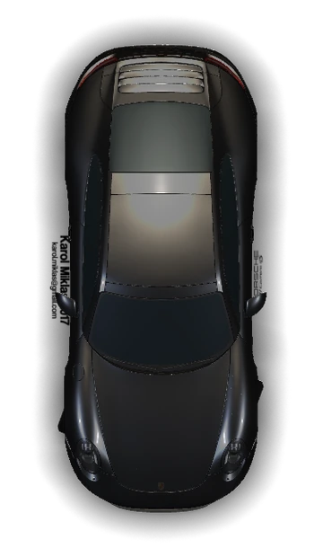

Anmeldung
Gemeinsam die passende Führerscheinklasse wählen, Unterlagen klären und den Ausbildungsweg festlegen.

Fahrschule Yellow-Drive · Murnau
Ausbildung für Auto, Motorrad, Anhänger und Landwirtschaft – mit persönlicher Begleitung von der Anmeldung bis zur Prüfung.
Gemeinsam die passende Führerscheinklasse wählen, Unterlagen klären und den Ausbildungsweg festlegen.
Strukturierte Vorbereitung auf die theoretische Prüfung – verständlich, klar und passend zu deiner Klasse.
Grundausbildung, Überland, Autobahn und Nachtfahrt – bis sich sicheres Fahren selbstverständlich anfühlt.
Führerscheinklassen
B · BF17 · B197 · BE · B96 · A · A1 · A2 · AM · Mofa · L
Kontakt
Inhaber Stefan Bartl
Reschstrasse 2 · 82418 Murnau